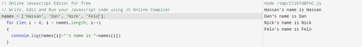

JS Fundamentals
JS FundamentalsHTML provides structure to the webpage and its contents. CSS does the styling and JavaScript does the automation.
In lay man terms, think of a human. HTML is the skeleton, CSS is all the muscles and features like nose, ears, eyes etc. While Javascript is the neural system which interacts with every part of the body.
In programming language, control flow refers to the sequence in which function calls, instructions, and statements are executed or evaluated. An if/else statement in the JavaScript is an example of a control flow statement.
For example: Book issuance from library
If the book that I am searching for is not available in the library, then I should be notified that the book is not avaliable else I get the location of the book.
Loops are used when you have to repeat the actions over and over again. Common life example is chopping veges. Imagine we have a big pile of veges to chop and we are doing the same action over and over again. In the world of loops we can put the repetitive stuff with in the loop. The loops need to have a starting point and a condition when to terminate and an increment value that helps identify how many iterations are needed between the start value and the end condition. The condition of the loop needs to be true on each iteration otherwise the loop will end.
The increment expression tells us how big the loop hop will be. I don’t know if loop hop is even a term but this is how I understand it. Kind of like a step or a hop from one iteration to the next.

let shoppingList = [‘eggs, ‘bread’, ‘apples’]
Arrays is a collection of multiple values stored in a single variable. In other words array is a list of objects. For example, A list of to do, a shopping list, registers, menu etc
In array each element is indexed that determines the position of an element and index starts from zero. So, if we want to access an element in an array, we use index. Here’s how:
console.log(shoppingList[2])
Result in console: apples
The most common example I read that helps in explaining the concept of objects is
These are the tasks defined by a set of instructions by us that can be run at the certain point in time and are adaptable.
For example, I have a friend come over and request to have a cup of coffee but he wants his coffee to be slightly different like extra sugar and milk. It goes like:
DOM represents the context of document as tree structure and we use it to attach listeners, add, remove and change elements in HTML document. While DevTools allows us to view and change/manipulate the DOM, change a page CSS in a preview environment and run JS code in the console for testing.
For example: You might have observed this, every grocery store has set number of aisles and each aisle represents various sections and each section contains products which are similar. Just like a tree has a trunk which has many branches and each branch have flowers, fruits, and leaves.